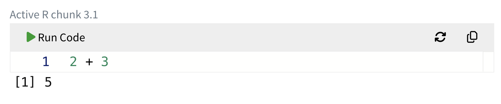

2 + 3[1] 5DTK
January 10, 2025
We’ve been introducing new terms that we will employ throughout the semester, mostly with an eye to creating an explicit nomenclature and notation.
I’ve taken pains to make the two systems of notation as similar as possible, but respect for tradition and the restrictions of computer language interpreters force some divergences.
Elements of notation:
x, y, t, rainfall, temp_{high}. When writing a name in computer notation, do not use quotation marks.sin(), log(), dnorm(). (dnorm() is a new one for you! Be patient.)
() after a function name to remind you that the thing being named is a function.+ is a function name, but you use it as 3 + 2 with the two arguments on the different sides of the function name. This contrasts with functional notation which would look something like \(plus(3, 2)\). Even on the computer, don’t convert infix notation to functional notation. Infix is usually easier to read (so long as there are just a handful of operators.)henry <- makeFun(t^2 / sin(2*pi*t/P) ~ t)* infix operator.In your own work, you will use interactive boxes—called “chunks” or “webr chunks”—to construct commands and, by pressing the “Run Code” button, get the computer to process them and appropriately display the results. It looks like this:

In writing up notes, I often use a different system that looks like this, without a “Run Code” button.
In both styles, the output is reported with some formatting. The content of the output in the above chunks is 5. Often, output will have more than one component and the [1] is just telling you that the 5 is the first component.
You’ll also sometimes see me using a different interface, called “RStudio,” where I type commands in a console or in a document. You don’t need to worry about this.
You cannot create on your own a webr chunk. I create them in the process of writing documents that you use. For instance, here is one:
But you can use a webr-chunk for any purpose that you like. Feel free to erase whatever expression has been typed and put in your own.
NB: Use the Calc I/II webr chunks for calculus, and the QR2 webr chunks for QR2. It would have been possible to arrange things so that you could use any chunk for any course, but I haven’t thought this necessary.
IN-CLASS EXERCISES:
Do some arithmetic and simple function application in R:
We often will want to give names to computed objects.
I use the strange word “object” because there are different kinds of computationally constructed things, e.g. numbers and functions among several others. (For instance, in QR2, you will sometimes create “simulations.”)
The computer syntax for giving a name to an object involves the “storage arrow” ->. Here, I’ll store the value 5.3 under the name b. The name always goes on the RHS of <-.
Note that when you store an object, the object is not printed.
To recall the named object from storage, just use the name as a command or as part of a command. For instance:
IN-CLASS EXERCISES:
billy_bob. Then confirm by calculating billy_bob squared.= be used in place of <-?In response to an ill-formed computer command or some other troubling condition, R will cancel the computation and display an error message. For instance, here is an expression that refers to a name that is not yet in use:
On some web browsers, the webr-chunk error messages are not shown. That’s a bug, and I’m trying to figure out what to do about it. For now, I can only apologize and give you a heads up.
Error messages are your friend. Admittedly, it is the kind of friend who you only welcome under special circumstances and otherwise avoid. The friend’s affect is offputting and intimidating. Try to overcome being affected by that. Also, the friend mostly mumbles. It takes work to feret out the valuable hint that your friend is trying to provide.
In-class EXERCISES:
billy bob to hold the value \(\cos(22)\)? After observing the error message, fix it.francis():Figure out what’s wrong and fix it.
Graphing functions of one variable and setting the graphics domain.
domain(x = 0:10)slice_plot(x^2 - 3*x + 2 ~ x, domain(x=-5:5))In-class EXERCISES:
Plot out each of the pattern-book functions on a suitable domain. pnorm(), dnorm(), exp(), sin(), sqrt(), log(),
Define a recip() function using makeFun().
Define an identity() function using makeFun(). (The identity function returns its input unaltered.)
Define a power_law() function using makeFun(). Example of a power-law function: \(y^{2.4}\)